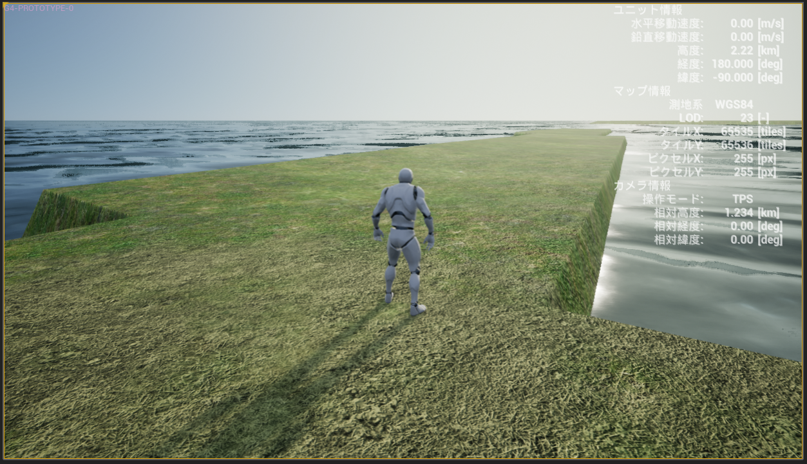
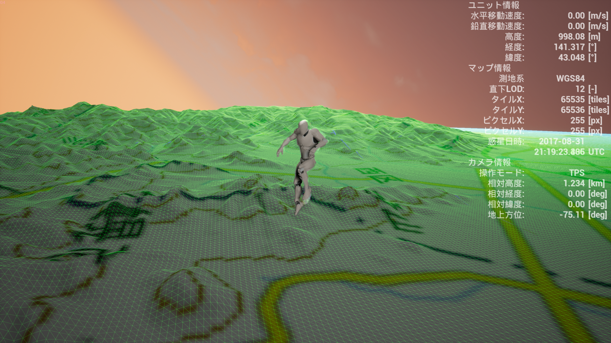
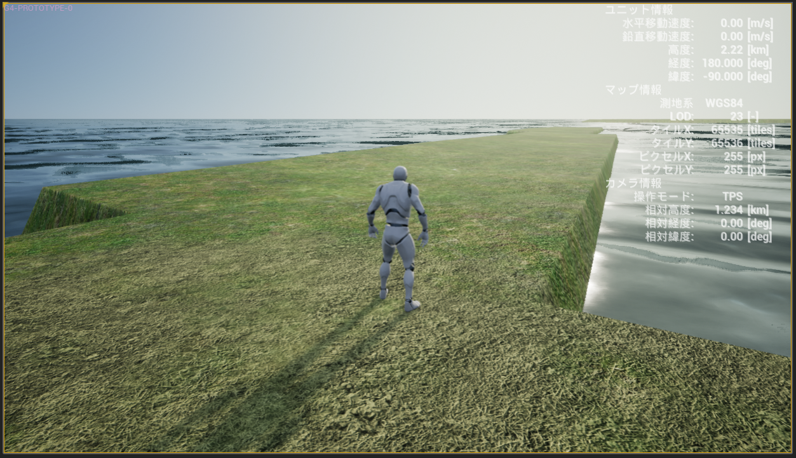
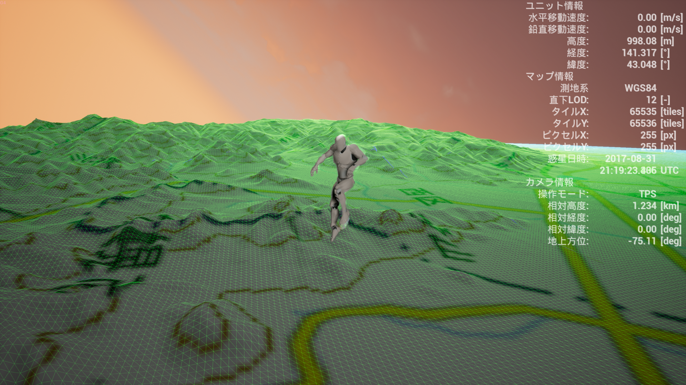
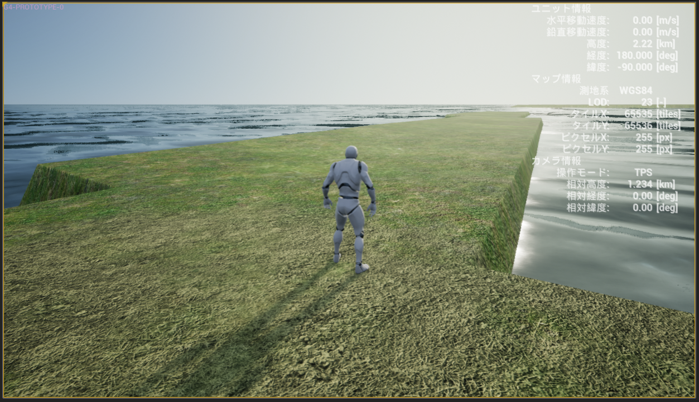
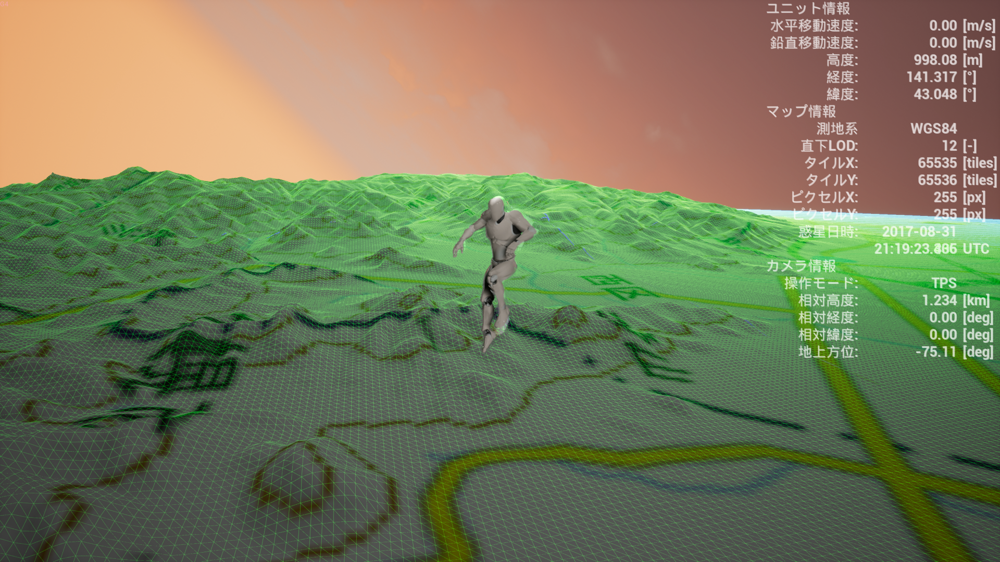
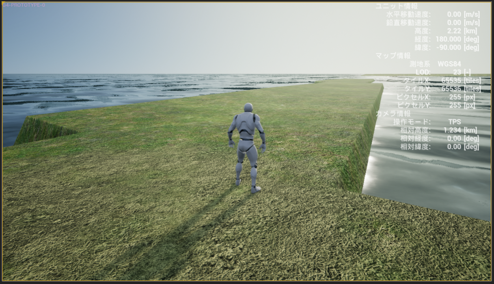
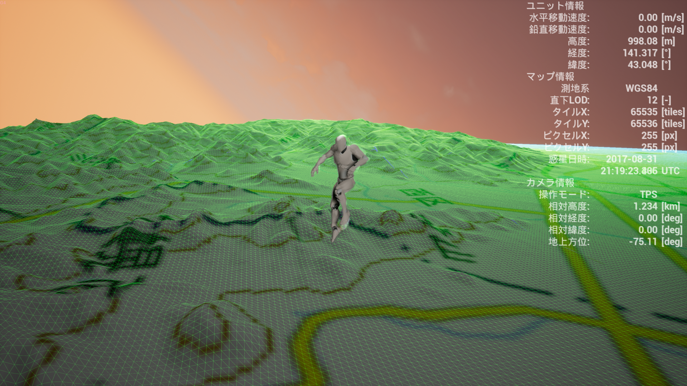

GONDWANAの現在の開発状況は G4 Closed Beta Test です。 GONDWANAの最初の一般公開（Open Beta Test）は2017年内を予定しています。 GONDWANAの最新の開発状況は「GONDWANA開発ブログ」で確認できます。 GitHubの運用内容は次の通りです: リポジトリー: GONDWANAの一般公開可能な種々のリソースを配置します。（例: 地図定義JSONファイル、データ変換スクリプト等） Releases: ダウンロード、リリースノート置き場として用います。 Wiki: マニュアル＆Tipsとして用います。 Issues: バグ報告、要望の受付と経過、対応状況の報告に用います。
 






